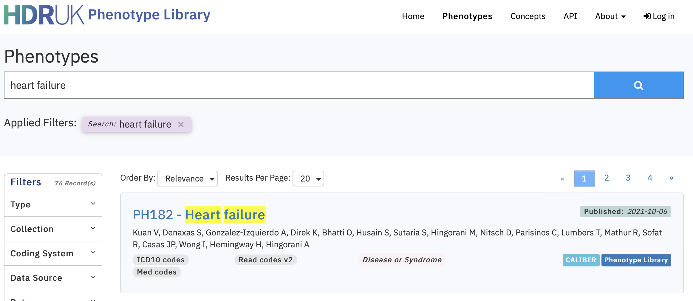

HFePHENO.RmdWe can use the HDR-UK Phenotypes library to search for curated Electronic Health Record code lists that have been curated to represent the ‘Heart Failure’ phenotype.
Using the online search we find nine existing phenotype libraries
with the ids:
c("PH25","PH531","PH182","PH1028","PH968","PH993","PH631","PH687","PH530").

# Connect to HDR-UK Phenotypes API
client = connect_to_API(public=TRUE)
# Get ids and versions of phenotype previously defined (via online search for 'Heart Failure')
ids_version = data.frame("id" = c("PH25", "PH531", "PH182", "PH1028", "PH968", "PH993", "PH631", "PH687", "PH530"),
"version"= c("50", "1062", "364", "2265", "2146", "2171", "1262", "1374", "1060"))
# Recursively extract the phenotype details from the 9 studies
details <- purrr::map2_df(.x = ids_version$id,
.y = ids_version$version,
.f = ~get_phenotype_detail_by_version(.x, .y, api_client=client)) |>
dplyr::select(phenotype_id, phenotype_name, type)
# View the study details
kableExtra::kable(details)| phenotype_id | phenotype_name | type |
|---|---|---|
| PH25 | Heart failure | Disease or Syndrome |
| PH531 | Heart Failure | Disease or Syndrome |
| PH182 | Heart failure | Disease or Syndrome |
| PH1028 | Heart Failure (fatal/non-fatal) | Disease or Syndrome |
| PH968 | CCU002_01 Heart failure | Disease or Syndrome |
| PH993 | CCU002_02 Heart Failure (HF) | Disease or Syndrome |
| PH631 | Heart Failure | Disease or Syndrome |
| PH687 | Heart Failure (P5) | Disease or Syndrome |
| PH530 | Heart Failure | Disease or Syndrome |
# Recursively extract the codes and details
codes <- purrr::map_df(.x = ids_version$id,
.f = function(x){
code_list <- get_phenotype_code_list(x, api_client=client)
extract <- data.frame("code" = code_list$code,
"coding_system" = code_list$coding_system,
"phenotype_name" = code_list$phenotype_name,
"concept_name" = code_list$concept_name,
"description" = code_list$description)
return(extract)})
# Make coding system a factor and arrange so that SNOMED codes first
codes <- codes |>
dplyr::mutate(coding_system = factor(coding_system, levels = c("SNOMED CT codes",
"Read codes v2",
"OXMIS codes",
"Med codes",
"ICD10 codes",
"ICD9 codes"))) |>
dplyr::arrange(coding_system) |>
dplyr::distinct(code, .keep_all=TRUE)
# View the study details
kableExtra::kable(codes)| code | coding_system | phenotype_name | concept_name | description |
|---|---|---|---|---|
| 10633002 | SNOMED CT codes | Heart failure | Heart failure - Secondary care | Acute congestive heart failure (disorder) |
| 418304008 | SNOMED CT codes | Heart failure | Heart failure - Secondary care | Diastolic heart failure (disorder) |
| 42343007 | SNOMED CT codes | Heart failure | Heart failure - Secondary care | Congestive heart failure (disorder) |
| 426263006 | SNOMED CT codes | Heart failure | Heart failure - Secondary care | Congestive heart failure due to left ventricular systolic dysfunction (disorder) |
| 48447003 | SNOMED CT codes | Heart failure | Heart failure - Secondary care | Chronic heart failure (disorder) |
| 10335000 | SNOMED CT codes | CCU002_01 Heart failure | CCU002_01 Heart failure - Phenotypes - England primary care EHR: HF diagnosis | Chronic right-sided heart failure (disorder) |
| 128404006 | SNOMED CT codes | CCU002_01 Heart failure | CCU002_01 Heart failure - Phenotypes - England primary care EHR: HF diagnosis | Right heart failure |
| 134401001 | SNOMED CT codes | CCU002_01 Heart failure | CCU002_01 Heart failure - Phenotypes - England primary care EHR: HF diagnosis | Left ventricular systolic dysfunction |
| 134440006 | SNOMED CT codes | CCU002_01 Heart failure | CCU002_01 Heart failure - Phenotypes - England primary care EHR: HF diagnosis | Referral to heart failure clinic |
| 194767001 | SNOMED CT codes | CCU002_01 Heart failure | CCU002_01 Heart failure - Phenotypes - England primary care EHR: HF diagnosis | Benign hypertensive heart disease with congestive cardiac failure |
| 194779001 | SNOMED CT codes | CCU002_01 Heart failure | CCU002_01 Heart failure - Phenotypes - England primary care EHR: HF diagnosis | Hypertensive heart and renal disease with (congestive) heart failure |
| 194781004 | SNOMED CT codes | CCU002_01 Heart failure | CCU002_01 Heart failure - Phenotypes - England primary care EHR: HF diagnosis | Hypertensive heart and renal disease with both (congestive) heart failure and renal failure |
| 195111005 | SNOMED CT codes | CCU002_01 Heart failure | CCU002_01 Heart failure - Phenotypes - England primary care EHR: HF diagnosis | Decompensated cardiac failure |
| 195112003 | SNOMED CT codes | CCU002_01 Heart failure | CCU002_01 Heart failure - Phenotypes - England primary care EHR: HF diagnosis | Compensated cardiac failure |
| 195114002 | SNOMED CT codes | CCU002_01 Heart failure | CCU002_01 Heart failure - Phenotypes - England primary care EHR: HF diagnosis | Acute left ventricular failure |
| 206586007 | SNOMED CT codes | CCU002_01 Heart failure | CCU002_01 Heart failure - Phenotypes - England primary care EHR: HF diagnosis | Congenital cardiac failure |
| 233924009 | SNOMED CT codes | CCU002_01 Heart failure | CCU002_01 Heart failure - Phenotypes - England primary care EHR: HF diagnosis | Heart failure as a complication of care (disorder) |
| 275514001 | SNOMED CT codes | CCU002_01 Heart failure | CCU002_01 Heart failure - Phenotypes - England primary care EHR: HF diagnosis | Impaired left ventricular function |
| 314206003 | SNOMED CT codes | CCU002_01 Heart failure | CCU002_01 Heart failure - Phenotypes - England primary care EHR: HF diagnosis | Refractory heart failure (disorder) |
| 367363000 | SNOMED CT codes | CCU002_01 Heart failure | CCU002_01 Heart failure - Phenotypes - England primary care EHR: HF diagnosis | Right ventricular failure |
| 407596008 | SNOMED CT codes | CCU002_01 Heart failure | CCU002_01 Heart failure - Phenotypes - England primary care EHR: HF diagnosis | Echocardiogram shows left ventricular systolic dysfunction (finding) |
| 420300004 | SNOMED CT codes | CCU002_01 Heart failure | CCU002_01 Heart failure - Phenotypes - England primary care EHR: HF diagnosis | New York Heart Association Classification - Class I (finding) |
| 420913000 | SNOMED CT codes | CCU002_01 Heart failure | CCU002_01 Heart failure - Phenotypes - England primary care EHR: HF diagnosis | New York Heart Association Classification - Class III (finding) |
| 421704003 | SNOMED CT codes | CCU002_01 Heart failure | CCU002_01 Heart failure - Phenotypes - England primary care EHR: HF diagnosis | New York Heart Association Classification - Class II (finding) |
| 422293003 | SNOMED CT codes | CCU002_01 Heart failure | CCU002_01 Heart failure - Phenotypes - England primary care EHR: HF diagnosis | New York Heart Association Classification - Class IV (finding) |
| 426611007 | SNOMED CT codes | CCU002_01 Heart failure | CCU002_01 Heart failure - Phenotypes - England primary care EHR: HF diagnosis | Congestive heart failure due to valvular disease (disorder) |
| 430396006 | SNOMED CT codes | CCU002_01 Heart failure | CCU002_01 Heart failure - Phenotypes - England primary care EHR: HF diagnosis | Chronic systolic dysfunction of left ventricle (disorder) |
| 43736008 | SNOMED CT codes | CCU002_01 Heart failure | CCU002_01 Heart failure - Phenotypes - England primary care EHR: HF diagnosis | Rheumatic left ventricular failure |
| 446221000 | SNOMED CT codes | CCU002_01 Heart failure | CCU002_01 Heart failure - Phenotypes - England primary care EHR: HF diagnosis | Heart failure with normal ejection fraction (disorder) |
| 56675007 | SNOMED CT codes | CCU002_01 Heart failure | CCU002_01 Heart failure - Phenotypes - England primary care EHR: HF diagnosis | Acute heart failure |
| 698592004 | SNOMED CT codes | CCU002_01 Heart failure | CCU002_01 Heart failure - Phenotypes - England primary care EHR: HF diagnosis | Asymptomatic left ventricular systolic dysfunction (disorder) |
| 703272007 | SNOMED CT codes | CCU002_01 Heart failure | CCU002_01 Heart failure - Phenotypes - England primary care EHR: HF diagnosis | Heart failure with reduced ejection fraction (disorder) |
| 717491000000102 | SNOMED CT codes | CCU002_01 Heart failure | CCU002_01 Heart failure - Phenotypes - England primary care EHR: HF diagnosis | Excepted from heart failure quality indicators - informed dissent (finding) |
| 71892000 | SNOMED CT codes | CCU002_01 Heart failure | CCU002_01 Heart failure - Phenotypes - England primary care EHR: HF diagnosis | Cardiac asthma |
| 760361000000100 | SNOMED CT codes | CCU002_01 Heart failure | CCU002_01 Heart failure - Phenotypes - England primary care EHR: HF diagnosis | Fast track heart failure referral for transthoracic two dimensional echocardiogram |
| 79955004 | SNOMED CT codes | CCU002_01 Heart failure | CCU002_01 Heart failure - Phenotypes - England primary care EHR: HF diagnosis | Chronic cor pulmonale |
| 83105008 | SNOMED CT codes | CCU002_01 Heart failure | CCU002_01 Heart failure - Phenotypes - England primary care EHR: HF diagnosis | Malignant hypertensive heart disease with congestive heart failure |
| 84114007 | SNOMED CT codes | CCU002_01 Heart failure | CCU002_01 Heart failure - Phenotypes - England primary care EHR: HF diagnosis | Heart failure |
| 85232009 | SNOMED CT codes | CCU002_01 Heart failure | CCU002_01 Heart failure - Phenotypes - England primary care EHR: HF diagnosis | Left heart failure |
| 87837008 | SNOMED CT codes | CCU002_01 Heart failure | CCU002_01 Heart failure - Phenotypes - England primary care EHR: HF diagnosis | Chronic pulmonary heart disease |
| 88805009 | SNOMED CT codes | CCU002_01 Heart failure | CCU002_01 Heart failure - Phenotypes - England primary care EHR: HF diagnosis | Chronic congestive heart failure |
| 92506005 | SNOMED CT codes | CCU002_01 Heart failure | CCU002_01 Heart failure - Phenotypes - England primary care EHR: HF diagnosis | Biventricular congestive heart failure |
| 1110931000000103 | SNOMED CT codes | CCU002_02 Heart Failure (HF) | CCU002_02 Heart Failure (HF) - Phenotypes - England primary care EHR: Heart failure diagnosis | Quality and Outcomes Framework heart failure quality indicator-related care invitation (procedure) |
| 711461000000104 | SNOMED CT codes | CCU002_02 Heart Failure (HF) | CCU002_02 Heart Failure (HF) - Phenotypes - England primary care EHR: Heart failure diagnosis | Heart failure monitoring invitation (procedure) |
| 716621000000101 | SNOMED CT codes | CCU002_02 Heart Failure (HF) | CCU002_02 Heart Failure (HF) - Phenotypes - England primary care EHR: Heart failure diagnosis | Heart failure monitoring third letter (procedure) |
| 716971000000109 | SNOMED CT codes | CCU002_02 Heart Failure (HF) | CCU002_02 Heart Failure (HF) - Phenotypes - England primary care EHR: Heart failure diagnosis | Heart failure monitoring first letter (procedure) |
| 717191000000108 | SNOMED CT codes | CCU002_02 Heart Failure (HF) | CCU002_02 Heart Failure (HF) - Phenotypes - England primary care EHR: Heart failure diagnosis | Heart failure monitoring second letter (procedure) |
| 717501000000108 | SNOMED CT codes | CCU002_02 Heart Failure (HF) | CCU002_02 Heart Failure (HF) - Phenotypes - England primary care EHR: Heart failure diagnosis | Heart failure monitoring verbal invitation (procedure) |
| 717531000000102 | SNOMED CT codes | CCU002_02 Heart Failure (HF) | CCU002_02 Heart Failure (HF) - Phenotypes - England primary care EHR: Heart failure diagnosis | Heart failure monitoring telephone invitation (procedure) |
| 1O1..00 | Read codes v2 | Heart Failure | Heart Failure - Primary Care | Heart failure confirmed |
| G1yz100 | Read codes v2 | Heart Failure | Heart Failure - Primary Care | Rheumatic left ventricular failure |
| G232.00 | Read codes v2 | Heart Failure | Heart Failure - Primary Care | Hypertensive heart&renal dis wth (congestive) heart failure |
| G234.00 | Read codes v2 | Heart Failure | Heart Failure - Primary Care | Hyperten heart&renal dis+both(congestv)heart and renal fail |
| G58..00 | Read codes v2 | Heart Failure | Heart Failure - Primary Care | Heart failure |
| G58..11 | Read codes v2 | Heart Failure | Heart Failure - Primary Care | Cardiac failure |
| G580.00 | Read codes v2 | Heart Failure | Heart Failure - Primary Care | Congestive heart failure |
| G580.11 | Read codes v2 | Heart Failure | Heart Failure - Primary Care | Congestive cardiac failure |
| G580.12 | Read codes v2 | Heart Failure | Heart Failure - Primary Care | Right heart failure |
| G580.13 | Read codes v2 | Heart Failure | Heart Failure - Primary Care | Right ventricular failure |
| G580.14 | Read codes v2 | Heart Failure | Heart Failure - Primary Care | Biventricular failure |
| G580000 | Read codes v2 | Heart Failure | Heart Failure - Primary Care | Acute congestive heart failure |
| G580100 | Read codes v2 | Heart Failure | Heart Failure - Primary Care | Chronic congestive heart failure |
| G580200 | Read codes v2 | Heart Failure | Heart Failure - Primary Care | Decompensated cardiac failure |
| G580300 | Read codes v2 | Heart Failure | Heart Failure - Primary Care | Compensated cardiac failure |
| G581.00 | Read codes v2 | Heart Failure | Heart Failure - Primary Care | Left ventricular failure |
| G581.11 | Read codes v2 | Heart Failure | Heart Failure - Primary Care | Asthma - cardiac |
| G581.12 | Read codes v2 | Heart Failure | Heart Failure - Primary Care | Pulmonary oedema - acute |
| G581.13 | Read codes v2 | Heart Failure | Heart Failure - Primary Care | Impaired left ventricular function |
| G581000 | Read codes v2 | Heart Failure | Heart Failure - Primary Care | Acute left ventricular failure |
| G582.00 | Read codes v2 | Heart Failure | Heart Failure - Primary Care | Acute heart failure |
| G58z.00 | Read codes v2 | Heart Failure | Heart Failure - Primary Care | Heart failure NOS |
| G58z.12 | Read codes v2 | Heart Failure | Heart Failure - Primary Care | Cardiac failure NOS |
| Q48y100 | Read codes v2 | Heart Failure | Heart Failure - Primary Care | Congenital cardiac failure |
| Q490.00 | Read codes v2 | Heart Failure | Heart Failure - Primary Care | Neonatal cardiac failure |
| 14A6.00 | Read codes v2 | Heart failure | Heart failure - Primary care | H/O: heart failure |
| 14AM.00 | Read codes v2 | Heart failure | Heart failure - Primary care | H/O: Heart failure in last year |
| 388D.00 | Read codes v2 | Heart failure | Heart failure - Primary care | New York Heart Assoc classification heart failure symptoms |
| 661M500 | Read codes v2 | Heart failure | Heart failure - Primary care | Heart failure self-management plan agreed |
| 662T.00 | Read codes v2 | Heart failure | Heart failure - Primary care | Congestive heart failure monitoring |
| 662W.00 | Read codes v2 | Heart failure | Heart failure - Primary care | Heart failure annual review |
| 662f.00 | Read codes v2 | Heart failure | Heart failure - Primary care | New York Heart Association classification - class I |
| 662g.00 | Read codes v2 | Heart failure | Heart failure - Primary care | New York Heart Association classification - class II |
| 662h.00 | Read codes v2 | Heart failure | Heart failure - Primary care | New York Heart Association classification - class III |
| 662i.00 | Read codes v2 | Heart failure | Heart failure - Primary care | New York Heart Association classification - class IV |
| 662p.00 | Read codes v2 | Heart failure | Heart failure - Primary care | Heart failure 6 month review |
| 679W100 | Read codes v2 | Heart failure | Heart failure - Primary care | Education about deteriorating heart failure |
| 679X.00 | Read codes v2 | Heart failure | Heart failure - Primary care | Heart failure education |
| 8B29.00 | Read codes v2 | Heart failure | Heart failure - Primary care | Cardiac failure therapy |
| 8CL3.00 | Read codes v2 | Heart failure | Heart failure - Primary care | Heart failure care plan discussed with patient |
| 8CMK.00 | Read codes v2 | Heart failure | Heart failure - Primary care | Has heart failure management plan |
| 8CMW800 | Read codes v2 | Heart failure | Heart failure - Primary care | Heart failure clinical pathway |
| 8CeC.00 | Read codes v2 | Heart failure | Heart failure - Primary care | Preferred place of care for next exacerbation heart failure |
| 8H2S.00 | Read codes v2 | Heart failure | Heart failure - Primary care | Admit heart failure emergency |
| 8HBE.00 | Read codes v2 | Heart failure | Heart failure - Primary care | Heart failure follow-up |
| 8HHz.00 | Read codes v2 | Heart failure | Heart failure - Primary care | Referral to heart failure exercise programme |
| 8Hk0.00 | Read codes v2 | Heart failure | Heart failure - Primary care | Referred to heart failure education group |
| 9N2p.00 | Read codes v2 | Heart failure | Heart failure - Primary care | Seen by community heart failure nurse |
| 9N6T.00 | Read codes v2 | Heart failure | Heart failure - Primary care | Referred by heart failure nurse specialist |
| 9On..00 | Read codes v2 | Heart failure | Heart failure - Primary care | Left ventricular dysfunction monitoring administration |
| 9On0.00 | Read codes v2 | Heart failure | Heart failure - Primary care | Left ventricular dysfunction monitoring first letter |
| 9On1.00 | Read codes v2 | Heart failure | Heart failure - Primary care | Left ventricular dysfunction monitoring second letter |
| 9On2.00 | Read codes v2 | Heart failure | Heart failure - Primary care | Left ventricular dysfunction monitoring third letter |
| 9On3.00 | Read codes v2 | Heart failure | Heart failure - Primary care | Left ventricular dysfunction monitoring verbal invite |
| 9On4.00 | Read codes v2 | Heart failure | Heart failure - Primary care | Left ventricular dysfunction monitoring telephone invite |
| 9Or..00 | Read codes v2 | Heart failure | Heart failure - Primary care | Heart failure monitoring administration |
| 9Or0.00 | Read codes v2 | Heart failure | Heart failure - Primary care | Heart failure review completed |
| 9Or1.00 | Read codes v2 | Heart failure | Heart failure - Primary care | Heart failure monitoring telephone invite |
| 9Or2.00 | Read codes v2 | Heart failure | Heart failure - Primary care | Heart failure monitoring verbal invite |
| 9Or3.00 | Read codes v2 | Heart failure | Heart failure - Primary care | Heart failure monitoring first letter |
| 9Or4.00 | Read codes v2 | Heart failure | Heart failure - Primary care | Heart failure monitoring second letter |
| 9Or5.00 | Read codes v2 | Heart failure | Heart failure - Primary care | Heart failure monitoring third letter |
| 9h1..00 | Read codes v2 | Heart failure | Heart failure - Primary care | Exception reporting: LVD quality indicators |
| 9h11.00 | Read codes v2 | Heart failure | Heart failure - Primary care | Excepted from LVD quality indicators: Patient unsuitable |
| 9h12.00 | Read codes v2 | Heart failure | Heart failure - Primary care | Excepted from LVD quality indicators: Informed dissent |
| 9hH..00 | Read codes v2 | Heart failure | Heart failure - Primary care | Exception reporting: heart failure quality indicators |
| 9hH0.00 | Read codes v2 | Heart failure | Heart failure - Primary care | Excepted heart failure quality indicators: Patient unsuitabl |
| 9hH1.00 | Read codes v2 | Heart failure | Heart failure - Primary care | Excepted heart failure quality indicators: Informed dissent |
| G210100 | Read codes v2 | Heart failure | Heart failure - Primary care | Malignant hypertensive heart disease with CCF |
| G211100 | Read codes v2 | Heart failure | Heart failure - Primary care | Benign hypertensive heart disease with CCF |
| G21z100 | Read codes v2 | Heart failure | Heart failure - Primary care | Hypertensive heart disease NOS with CCF |
| G400.00 | Read codes v2 | Heart failure | Heart failure - Primary care | Acute cor pulmonale |
| G41z.11 | Read codes v2 | Heart failure | Heart failure - Primary care | Chronic cor pulmonale |
| G554000 | Read codes v2 | Heart failure | Heart failure - Primary care | Congestive cardiomyopathy |
| G554011 | Read codes v2 | Heart failure | Heart failure - Primary care | Congestive obstructive cardiomyopathy |
| G580400 | Read codes v2 | Heart failure | Heart failure - Primary care | Congestive heart failure due to valvular disease |
| G584.00 | Read codes v2 | Heart failure | Heart failure - Primary care | Right ventricular failure |
| G5yy900 | Read codes v2 | Heart failure | Heart failure - Primary care | Left ventricular systolic dysfunction |
| G5yyA00 | Read codes v2 | Heart failure | Heart failure - Primary care | Left ventricular diastolic dysfunction |
| ZRad.00 | Read codes v2 | Heart failure | Heart failure - Primary care | New York Heart Assoc classification heart failure symptoms |
| G210.00 | Read codes v2 | Heart Failure (fatal/non-fatal) | File - Heart Failure - Primary Care - Incident - Diagnosis | Malignant hypertensive heart disease |
| G210000 | Read codes v2 | Heart Failure (fatal/non-fatal) | File - Heart Failure - Primary Care - Incident - Diagnosis | Malignant hypertensive heart disease without CCF |
| G230.00 | Read codes v2 | Heart Failure (fatal/non-fatal) | File - Heart Failure - Primary Care - Incident - Diagnosis | Malignant hypertensive heart and renal disease |
| R2y1000 | Read codes v2 | Heart Failure (fatal/non-fatal) | File - Heart Failure - Primary Care - Incident - Diagnosis | [D]Cardiorespiratory failure |
| 585f.00 | Read codes v2 | Heart Failure (fatal/non-fatal) | File - Heart Failure - Primary Care - Incident - Abnormal Echocardiogram Findings | Echocardiogram shows left ventricular systolic dysfunction |
| 585g.00 | Read codes v2 | Heart Failure (fatal/non-fatal) | File - Heart Failure - Primary Care - Incident - Abnormal Echocardiogram Findings | Echocardiogram shows left ventricular diastolic dysfunction |
| 1736 | Read codes v2 | Heart Failure (fatal/non-fatal) | File - Heart Failure - Primary Care - Prevalent | Paroxysmal nocturnal dyspnoea |
| 1J60.00 | Read codes v2 | Heart Failure (fatal/non-fatal) | File - Heart Failure - Primary Care - Prevalent | Suspected heart failure |
| 23E1.00 | Read codes v2 | Heart Failure (fatal/non-fatal) | File - Heart Failure - Primary Care - Prevalent | O/E - pulmonary oedema |
| 8Hg8.00 | Read codes v2 | Heart Failure (fatal/non-fatal) | File - Heart Failure - Primary Care - Prevalent | Discharge from practice nurse heart failure clinic |
| 9N0k.00 | Read codes v2 | Heart Failure (fatal/non-fatal) | File - Heart Failure - Primary Care - Prevalent | Seen in heart failure clinic |
| 9N4s.00 | Read codes v2 | Heart Failure (fatal/non-fatal) | File - Heart Failure - Primary Care - Prevalent | Did not attend practice nurse heart failure clinic |
| 9N4w.00 | Read codes v2 | Heart Failure (fatal/non-fatal) | File - Heart Failure - Primary Care - Prevalent | Did not attend heart failure clinic |
| G58z.11 | Read codes v2 | Heart Failure (fatal/non-fatal) | File - Heart Failure - Primary Care - Prevalent | Weak heart |
| H54..00 | Read codes v2 | Heart Failure (fatal/non-fatal) | File - Heart Failure - Primary Care - Prevalent | Pulmonary congestion and hypostasis |
| H541.00 | Read codes v2 | Heart Failure (fatal/non-fatal) | File - Heart Failure - Primary Care - Prevalent | Pulmonary congestion |
| H541000 | Read codes v2 | Heart Failure (fatal/non-fatal) | File - Heart Failure - Primary Care - Prevalent | Chronic pulmonary oedema |
| H541z00 | Read codes v2 | Heart Failure (fatal/non-fatal) | File - Heart Failure - Primary Care - Prevalent | Pulmonary oedema NOS |
| H54z.00 | Read codes v2 | Heart Failure (fatal/non-fatal) | File - Heart Failure - Primary Care - Prevalent | Pulmonary congestion and hypostasis NOS |
| H584.00 | Read codes v2 | Heart Failure (fatal/non-fatal) | File - Heart Failure - Primary Care - Prevalent | Acute pulmonary oedema unspecified |
| H584z00 | Read codes v2 | Heart Failure (fatal/non-fatal) | File - Heart Failure - Primary Care - Prevalent | Acute pulmonary oedema NOS |
| 14A6. | Read codes v2 | CCU002_01 Heart failure | CCU002_01 Heart failure - Phenotypes - Wales primary care EHR: HF diagnosis | H/O: heart failure |
| 14AM. | Read codes v2 | CCU002_01 Heart failure | CCU002_01 Heart failure - Phenotypes - Wales primary care EHR: HF diagnosis | H/O: Heart failure in last year |
| 1O1.. | Read codes v2 | CCU002_01 Heart failure | CCU002_01 Heart failure - Phenotypes - Wales primary care EHR: HF diagnosis | Heart failure confirmed |
| 388D. | Read codes v2 | CCU002_01 Heart failure | CCU002_01 Heart failure - Phenotypes - Wales primary care EHR: HF diagnosis | New York Heart Assoc classification heart failure symptoms |
| 661M5 | Read codes v2 | CCU002_01 Heart failure | CCU002_01 Heart failure - Phenotypes - Wales primary care EHR: HF diagnosis | Heart failure self-management plan agreed |
| 662T. | Read codes v2 | CCU002_01 Heart failure | CCU002_01 Heart failure - Phenotypes - Wales primary care EHR: HF diagnosis | Congestive heart failure monitoring |
| 662W. | Read codes v2 | CCU002_01 Heart failure | CCU002_01 Heart failure - Phenotypes - Wales primary care EHR: HF diagnosis | Heart failure annual review |
| 662f. | Read codes v2 | CCU002_01 Heart failure | CCU002_01 Heart failure - Phenotypes - Wales primary care EHR: HF diagnosis | New York Heart Association classification - class I |
| 662g. | Read codes v2 | CCU002_01 Heart failure | CCU002_01 Heart failure - Phenotypes - Wales primary care EHR: HF diagnosis | New York Heart Association classification - class II |
| 662h. | Read codes v2 | CCU002_01 Heart failure | CCU002_01 Heart failure - Phenotypes - Wales primary care EHR: HF diagnosis | New York Heart Association classification - class III |
| 662i. | Read codes v2 | CCU002_01 Heart failure | CCU002_01 Heart failure - Phenotypes - Wales primary care EHR: HF diagnosis | New York Heart Association classification - class IV |
| 662p. | Read codes v2 | CCU002_01 Heart failure | CCU002_01 Heart failure - Phenotypes - Wales primary care EHR: HF diagnosis | Heart failure 6 month review |
| 679W1 | Read codes v2 | CCU002_01 Heart failure | CCU002_01 Heart failure - Phenotypes - Wales primary care EHR: HF diagnosis | Education about deteriorating heart failure |
| 679X. | Read codes v2 | CCU002_01 Heart failure | CCU002_01 Heart failure - Phenotypes - Wales primary care EHR: HF diagnosis | Heart failure education |
| 8B29. | Read codes v2 | CCU002_01 Heart failure | CCU002_01 Heart failure - Phenotypes - Wales primary care EHR: HF diagnosis | Cardiac failure therapy |
| 8CL3. | Read codes v2 | CCU002_01 Heart failure | CCU002_01 Heart failure - Phenotypes - Wales primary care EHR: HF diagnosis | Heart failure care plan discussed with patient |
| 8CMK. | Read codes v2 | CCU002_01 Heart failure | CCU002_01 Heart failure - Phenotypes - Wales primary care EHR: HF diagnosis | Has heart failure management plan |
| 8CMW8 | Read codes v2 | CCU002_01 Heart failure | CCU002_01 Heart failure - Phenotypes - Wales primary care EHR: HF diagnosis | Heart failure clinical pathway |
| 8CeC. | Read codes v2 | CCU002_01 Heart failure | CCU002_01 Heart failure - Phenotypes - Wales primary care EHR: HF diagnosis | Preferred place of care for next exacerbation heart failure |
| 8H2S. | Read codes v2 | CCU002_01 Heart failure | CCU002_01 Heart failure - Phenotypes - Wales primary care EHR: HF diagnosis | Admit heart failure emergency |
| 8HBE. | Read codes v2 | CCU002_01 Heart failure | CCU002_01 Heart failure - Phenotypes - Wales primary care EHR: HF diagnosis | Heart failure follow-up |
| 8HHz. | Read codes v2 | CCU002_01 Heart failure | CCU002_01 Heart failure - Phenotypes - Wales primary care EHR: HF diagnosis | Referral to heart failure exercise programme |
| 8Hk0. | Read codes v2 | CCU002_01 Heart failure | CCU002_01 Heart failure - Phenotypes - Wales primary care EHR: HF diagnosis | Referred to heart failure education group |
| 9N2p. | Read codes v2 | CCU002_01 Heart failure | CCU002_01 Heart failure - Phenotypes - Wales primary care EHR: HF diagnosis | Seen by community heart failure nurse |
| 9N6T. | Read codes v2 | CCU002_01 Heart failure | CCU002_01 Heart failure - Phenotypes - Wales primary care EHR: HF diagnosis | Referred by heart failure nurse specialist |
| 9On.. | Read codes v2 | CCU002_01 Heart failure | CCU002_01 Heart failure - Phenotypes - Wales primary care EHR: HF diagnosis | Left ventricular dysfunction monitoring administration |
| 9On0. | Read codes v2 | CCU002_01 Heart failure | CCU002_01 Heart failure - Phenotypes - Wales primary care EHR: HF diagnosis | Left ventricular dysfunction monitoring first letter |
| 9On1. | Read codes v2 | CCU002_01 Heart failure | CCU002_01 Heart failure - Phenotypes - Wales primary care EHR: HF diagnosis | Left ventricular dysfunction monitoring second letter |
| 9On2. | Read codes v2 | CCU002_01 Heart failure | CCU002_01 Heart failure - Phenotypes - Wales primary care EHR: HF diagnosis | Left ventricular dysfunction monitoring third letter |
| 9On3. | Read codes v2 | CCU002_01 Heart failure | CCU002_01 Heart failure - Phenotypes - Wales primary care EHR: HF diagnosis | Left ventricular dysfunction monitoring verbal invite |
| 9On4. | Read codes v2 | CCU002_01 Heart failure | CCU002_01 Heart failure - Phenotypes - Wales primary care EHR: HF diagnosis | Left ventricular dysfunction monitoring telephone invite |
| 9Or.. | Read codes v2 | CCU002_01 Heart failure | CCU002_01 Heart failure - Phenotypes - Wales primary care EHR: HF diagnosis | Heart failure monitoring administration |
| 9Or0. | Read codes v2 | CCU002_01 Heart failure | CCU002_01 Heart failure - Phenotypes - Wales primary care EHR: HF diagnosis | Heart failure review completed |
| 9Or1. | Read codes v2 | CCU002_01 Heart failure | CCU002_01 Heart failure - Phenotypes - Wales primary care EHR: HF diagnosis | Heart failure monitoring telephone invite |
| 9Or2. | Read codes v2 | CCU002_01 Heart failure | CCU002_01 Heart failure - Phenotypes - Wales primary care EHR: HF diagnosis | Heart failure monitoring verbal invite |
| 9Or3. | Read codes v2 | CCU002_01 Heart failure | CCU002_01 Heart failure - Phenotypes - Wales primary care EHR: HF diagnosis | Heart failure monitoring first letter |
| 9Or4. | Read codes v2 | CCU002_01 Heart failure | CCU002_01 Heart failure - Phenotypes - Wales primary care EHR: HF diagnosis | Heart failure monitoring second letter |
| 9Or5. | Read codes v2 | CCU002_01 Heart failure | CCU002_01 Heart failure - Phenotypes - Wales primary care EHR: HF diagnosis | Heart failure monitoring third letter |
| 9h1.. | Read codes v2 | CCU002_01 Heart failure | CCU002_01 Heart failure - Phenotypes - Wales primary care EHR: HF diagnosis | Exception reporting: LVD quality indicators |
| 9h11. | Read codes v2 | CCU002_01 Heart failure | CCU002_01 Heart failure - Phenotypes - Wales primary care EHR: HF diagnosis | Excepted from LVD quality indicators: Patient unsuitable |
| 9h12. | Read codes v2 | CCU002_01 Heart failure | CCU002_01 Heart failure - Phenotypes - Wales primary care EHR: HF diagnosis | Excepted from LVD quality indicators: Informed dissent |
| 9hH.. | Read codes v2 | CCU002_01 Heart failure | CCU002_01 Heart failure - Phenotypes - Wales primary care EHR: HF diagnosis | Exception reporting: heart failure quality indicators |
| 9hH0. | Read codes v2 | CCU002_01 Heart failure | CCU002_01 Heart failure - Phenotypes - Wales primary care EHR: HF diagnosis | Excepted heart failure quality indicators: Patient unsuitabl |
| 9hH1. | Read codes v2 | CCU002_01 Heart failure | CCU002_01 Heart failure - Phenotypes - Wales primary care EHR: HF diagnosis | Excepted heart failure quality indicators: Informed dissent |
| G1yz1 | Read codes v2 | CCU002_01 Heart failure | CCU002_01 Heart failure - Phenotypes - Wales primary care EHR: HF diagnosis | Rheumatic left ventricular failure |
| G2101 | Read codes v2 | CCU002_01 Heart failure | CCU002_01 Heart failure - Phenotypes - Wales primary care EHR: HF diagnosis | Malignant hypertensive heart disease with CCF |
| G2111 | Read codes v2 | CCU002_01 Heart failure | CCU002_01 Heart failure - Phenotypes - Wales primary care EHR: HF diagnosis | Benign hypertensive heart disease with CCF |
| G21z1 | Read codes v2 | CCU002_01 Heart failure | CCU002_01 Heart failure - Phenotypes - Wales primary care EHR: HF diagnosis | Hypertensive heart disease NOS with CCF |
| G232. | Read codes v2 | CCU002_01 Heart failure | CCU002_01 Heart failure - Phenotypes - Wales primary care EHR: HF diagnosis | Hypertensive heart&renal dis wth (congestive) heart failure |
| G234. | Read codes v2 | CCU002_01 Heart failure | CCU002_01 Heart failure - Phenotypes - Wales primary care EHR: HF diagnosis | Hyperten heart&renal dis+both(congestv)heart and renal fail |
| G400. | Read codes v2 | CCU002_01 Heart failure | CCU002_01 Heart failure - Phenotypes - Wales primary care EHR: HF diagnosis | Acute cor pulmonale |
| G41z. | Read codes v2 | CCU002_01 Heart failure | CCU002_01 Heart failure - Phenotypes - Wales primary care EHR: HF diagnosis | Chronic cor pulmonale |
| G5540 | Read codes v2 | CCU002_01 Heart failure | CCU002_01 Heart failure - Phenotypes - Wales primary care EHR: HF diagnosis | Congestive cardiomyopathy |
| G58.. | Read codes v2 | CCU002_01 Heart failure | CCU002_01 Heart failure - Phenotypes - Wales primary care EHR: HF diagnosis | Heart failure |
| G580. | Read codes v2 | CCU002_01 Heart failure | CCU002_01 Heart failure - Phenotypes - Wales primary care EHR: HF diagnosis | Congestive heart failure |
| G5800 | Read codes v2 | CCU002_01 Heart failure | CCU002_01 Heart failure - Phenotypes - Wales primary care EHR: HF diagnosis | Acute congestive heart failure |
| G5801 | Read codes v2 | CCU002_01 Heart failure | CCU002_01 Heart failure - Phenotypes - Wales primary care EHR: HF diagnosis | Chronic congestive heart failure |
| G5802 | Read codes v2 | CCU002_01 Heart failure | CCU002_01 Heart failure - Phenotypes - Wales primary care EHR: HF diagnosis | Decompensated cardiac failure |
| G5803 | Read codes v2 | CCU002_01 Heart failure | CCU002_01 Heart failure - Phenotypes - Wales primary care EHR: HF diagnosis | Compensated cardiac failure |
| G5804 | Read codes v2 | CCU002_01 Heart failure | CCU002_01 Heart failure - Phenotypes - Wales primary care EHR: HF diagnosis | Congestive heart failure due to valvular disease |
| G581. | Read codes v2 | CCU002_01 Heart failure | CCU002_01 Heart failure - Phenotypes - Wales primary care EHR: HF diagnosis | Left ventricular failure |
| G5810 | Read codes v2 | CCU002_01 Heart failure | CCU002_01 Heart failure - Phenotypes - Wales primary care EHR: HF diagnosis | Acute left ventricular failure |
| G582. | Read codes v2 | CCU002_01 Heart failure | CCU002_01 Heart failure - Phenotypes - Wales primary care EHR: HF diagnosis | Acute heart failure |
| G584. | Read codes v2 | CCU002_01 Heart failure | CCU002_01 Heart failure - Phenotypes - Wales primary care EHR: HF diagnosis | Right ventricular failure |
| G58z. | Read codes v2 | CCU002_01 Heart failure | CCU002_01 Heart failure - Phenotypes - Wales primary care EHR: HF diagnosis | Heart failure NOS |
| G5yy9 | Read codes v2 | CCU002_01 Heart failure | CCU002_01 Heart failure - Phenotypes - Wales primary care EHR: HF diagnosis | Left ventricular systolic dysfunction |
| G5yyA | Read codes v2 | CCU002_01 Heart failure | CCU002_01 Heart failure - Phenotypes - Wales primary care EHR: HF diagnosis | Left ventricular diastolic dysfunction |
| ZRad. | Read codes v2 | CCU002_01 Heart failure | CCU002_01 Heart failure - Phenotypes - Wales primary care EHR: HF diagnosis | New York Heart Assoc classification heart failure symptoms |
| G583.00 | Read codes v2 | Heart Failure (P5) | Heart Failure (P5) - Primary Care | Heart failure with normal ejection fraction |
| G583.11 | Read codes v2 | Heart Failure (P5) | Heart Failure (P5) - Primary Care | HFNEF - heart failure with normal ejection fraction |
| G583.12 | Read codes v2 | Heart Failure (P5) | Heart Failure (P5) - Primary Care | Heart failure with preserved ejection fraction |
| 402 C | OXMIS codes | Heart Failure | Heart Failure - Primary Care | HYPERTENSION CONGESTIVE HEART FAILURE |
| 4270 | OXMIS codes | Heart Failure | Heart Failure - Primary Care | CONGESTIVE HEART FAILURE |
| 4270C | OXMIS codes | Heart Failure | Heart Failure - Primary Care | CONGESTIVE CARDIAC FAILURE |
| 4270CC | OXMIS codes | Heart Failure | Heart Failure - Primary Care | CONGESTIVE HEART FAILURE COMPENSATED |
| 4270D | OXMIS codes | Heart Failure | Heart Failure - Primary Care | CONGESTIVE HEART FAILURE DECOMPENSATED |
| 4270DR | OXMIS codes | Heart Failure | Heart Failure - Primary Care | DROPSY CARDIAC |
| 4270LW | OXMIS codes | Heart Failure | Heart Failure - Primary Care | SYNDROME LOW-OUTPUT |
| 4270R | OXMIS codes | Heart Failure | Heart Failure - Primary Care | HEART FAILURE RIGHT-SIDED |
| 4271 | OXMIS codes | Heart Failure | Heart Failure - Primary Care | LVF (LEFT VENTRICULAR FAILURE) |
| 4271A | OXMIS codes | Heart Failure | Heart Failure - Primary Care | LEFT VENTRICULAR FAILURE ACUTE |
| 4271H | OXMIS codes | Heart Failure | Heart Failure - Primary Care | HEART FAILURE LEFT-SIDED |
| 428 A | OXMIS codes | Heart Failure | Heart Failure - Primary Care | INSUFFICIENCY CARDIAC |
| 7824A | OXMIS codes | Heart Failure | Heart Failure - Primary Care | HIGH OUTPUT FAILURE (CARDIAC) |
| 7824AC | OXMIS codes | Heart Failure | Heart Failure - Primary Care | HEART FAILURE ACUTE |
| 7824FC | OXMIS codes | Heart Failure | Heart Failure - Primary Care | FAILURE CARDIAC |
| 7824FH | OXMIS codes | Heart Failure | Heart Failure - Primary Care | HEART FAILURE |
| 10079.0 | Med codes | Heart failure | Heart failure - Primary care | Diagnosis of Heart failure |
| 10154.0 | Med codes | Heart failure | Heart failure - Primary care | Diagnosis of Heart failure |
| 103732.0 | Med codes | Heart failure | Heart failure - Primary care | History of Heart failure |
| 104275.0 | Med codes | Heart failure | Heart failure - Primary care | Diagnosis of Heart failure |
| 105002.0 | Med codes | Heart failure | Heart failure - Primary care | History of Heart failure |
| 105542.0 | Med codes | Heart failure | Heart failure - Primary care | History of Heart failure |
| 106008.0 | Med codes | Heart failure | Heart failure - Primary care | History of Heart failure |
| 106198.0 | Med codes | Heart failure | Heart failure - Primary care | History of Heart failure |
| 11424.0 | Med codes | Heart failure | Heart failure - Primary care | Diagnosis of Heart failure |
| 11613.0 | Med codes | Heart failure | Heart failure - Primary care | History of Heart failure |
| 1223.0 | Med codes | Heart failure | Heart failure - Primary care | Diagnosis of Heart failure |
| 12366.0 | Med codes | Heart failure | Heart failure - Primary care | History of Heart failure |
| 12550.0 | Med codes | Heart failure | Heart failure - Primary care | Diagnosis of Heart failure |
| 13189.0 | Med codes | Heart failure | Heart failure - Primary care | Diagnosis of Heart failure |
| 15058.0 | Med codes | Heart failure | Heart failure - Primary care | History of Heart failure |
| 17278.0 | Med codes | Heart failure | Heart failure - Primary care | Diagnosis of Heart failure |
| 17851.0 | Med codes | Heart failure | Heart failure - Primary care | History of Heart failure |
| 18793.0 | Med codes | Heart failure | Heart failure - Primary care | History of Heart failure |
| 18853.0 | Med codes | Heart failure | Heart failure - Primary care | Diagnosis of Heart failure |
| 19002.0 | Med codes | Heart failure | Heart failure - Primary care | History of Heart failure |
| 19066.0 | Med codes | Heart failure | Heart failure - Primary care | Diagnosis of Heart failure |
| 19380.0 | Med codes | Heart failure | Heart failure - Primary care | History of Heart failure |
| 2062.0 | Med codes | Heart failure | Heart failure - Primary care | Diagnosis of Heart failure |
| 21837.0 | Med codes | Heart failure | Heart failure - Primary care | Diagnosis of Heart failure |
| 22262.0 | Med codes | Heart failure | Heart failure - Primary care | Diagnosis of Heart failure |
| 23481.0 | Med codes | Heart failure | Heart failure - Primary care | Diagnosis of Heart failure |
| 23707.0 | Med codes | Heart failure | Heart failure - Primary care | Diagnosis of Heart failure |
| 24503.0 | Med codes | Heart failure | Heart failure - Primary care | Diagnosis of Heart failure |
| 26242.0 | Med codes | Heart failure | Heart failure - Primary care | Diagnosis of Heart failure |
| 27884.0 | Med codes | Heart failure | Heart failure - Primary care | Diagnosis of Heart failure |
| 27964.0 | Med codes | Heart failure | Heart failure - Primary care | Diagnosis of Heart failure |
| 28649.0 | Med codes | Heart failure | Heart failure - Primary care | History of Heart failure |
| 2906.0 | Med codes | Heart failure | Heart failure - Primary care | Diagnosis of Heart failure |
| 30749.0 | Med codes | Heart failure | Heart failure - Primary care | History of Heart failure |
| 30779.0 | Med codes | Heart failure | Heart failure - Primary care | History of Heart failure |
| 32671.0 | Med codes | Heart failure | Heart failure - Primary care | Diagnosis of Heart failure |
| 32898.0 | Med codes | Heart failure | Heart failure - Primary care | History of Heart failure |
| 32911.0 | Med codes | Heart failure | Heart failure - Primary care | History of Heart failure |
| 32945.0 | Med codes | Heart failure | Heart failure - Primary care | History of Heart failure |
| 34213.0 | Med codes | Heart failure | Heart failure - Primary care | History of Heart failure |
| 398.0 | Med codes | Heart failure | Heart failure - Primary care | Diagnosis of Heart failure |
| 4024.0 | Med codes | Heart failure | Heart failure - Primary care | Diagnosis of Heart failure |
| 46672.0 | Med codes | Heart failure | Heart failure - Primary care | Diagnosis of Heart failure |
| 46912.0 | Med codes | Heart failure | Heart failure - Primary care | History of Heart failure |
| 51214.0 | Med codes | Heart failure | Heart failure - Primary care | Diagnosis of Heart failure |
| 5141.0 | Med codes | Heart failure | Heart failure - Primary care | Diagnosis of Heart failure |
| 52127.0 | Med codes | Heart failure | Heart failure - Primary care | Diagnosis of Heart failure |
| 5255.0 | Med codes | Heart failure | Heart failure - Primary care | Diagnosis of Heart failure |
| 5695.0 | Med codes | Heart failure | Heart failure - Primary care | Diagnosis of Heart failure |
| 57987.0 | Med codes | Heart failure | Heart failure - Primary care | Diagnosis of Heart failure |
| 5942.0 | Med codes | Heart failure | Heart failure - Primary care | Diagnosis of Heart failure |
| 60710.0 | Med codes | Heart failure | Heart failure - Primary care | History of Heart failure |
| 60721.0 | Med codes | Heart failure | Heart failure - Primary care | History of Heart failure |
| 62718.0 | Med codes | Heart failure | Heart failure - Primary care | Diagnosis of Heart failure |
| 64062.0 | Med codes | Heart failure | Heart failure - Primary care | History of Heart failure |
| 68766.0 | Med codes | Heart failure | Heart failure - Primary care | Diagnosis of Heart failure |
| 69062.0 | Med codes | Heart failure | Heart failure - Primary care | History of Heart failure |
| 70619.0 | Med codes | Heart failure | Heart failure - Primary care | History of Heart failure |
| 71235.0 | Med codes | Heart failure | Heart failure - Primary care | History of Heart failure |
| 72341.0 | Med codes | Heart failure | Heart failure - Primary care | History of Heart failure |
| 72386.0 | Med codes | Heart failure | Heart failure - Primary care | History of Heart failure |
| 72668.0 | Med codes | Heart failure | Heart failure - Primary care | Diagnosis of Heart failure |
| 72965.0 | Med codes | Heart failure | Heart failure - Primary care | History of Heart failure |
| 83502.0 | Med codes | Heart failure | Heart failure - Primary care | History of Heart failure |
| 8464.0 | Med codes | Heart failure | Heart failure - Primary care | Diagnosis of Heart failure |
| 884.0 | Med codes | Heart failure | Heart failure - Primary care | Diagnosis of Heart failure |
| 89650.0 | Med codes | Heart failure | Heart failure - Primary care | History of Heart failure |
| 8966.0 | Med codes | Heart failure | Heart failure - Primary care | Diagnosis of Heart failure |
| 90192.0 | Med codes | Heart failure | Heart failure - Primary care | History of Heart failure |
| 90193.0 | Med codes | Heart failure | Heart failure - Primary care | History of Heart failure |
| 90935.0 | Med codes | Heart failure | Heart failure - Primary care | History of Heart failure |
| 92305.0 | Med codes | Heart failure | Heart failure - Primary care | History of Heart failure |
| 94870.0 | Med codes | Heart failure | Heart failure - Primary care | Diagnosis of Heart failure |
| 9524.0 | Med codes | Heart failure | Heart failure - Primary care | Diagnosis of Heart failure |
| 95835.0 | Med codes | Heart failure | Heart failure - Primary care | History of Heart failure |
| 96484.0 | Med codes | Heart failure | Heart failure - Primary care | History of Heart failure |
| 9913.0 | Med codes | Heart failure | Heart failure - Primary care | Diagnosis of Heart failure |
| I11.0 | ICD10 codes | Heart failure | Heart failure - Secondary care - Diagnoses | Hypertensive heart disease with (congestive) heart failure |
| I13.0 | ICD10 codes | Heart failure | Heart failure - Secondary care - Diagnoses | Hypertensive heart and renal disease with (congestive) heart failure |
| I13.2 | ICD10 codes | Heart failure | Heart failure - Secondary care - Diagnoses | Hypertensive heart and renal disease with both (congestive) heart failure and renal failure |
| I50 | ICD10 codes | Heart failure | Heart failure - Secondary care - Diagnoses | Heart failure |
| I32.2 | ICD10 codes | Heart Failure (fatal/non-fatal) | File - Coronary Heart Disease - Secondary Care | Hypertensive heart and renal disease with both (congestive) heart failure and renal failure |
| I50.0 | ICD10 codes | Heart Failure (fatal/non-fatal) | File - Coronary Heart Disease - Secondary Care | Congestive heart failure |
| I50.1 | ICD10 codes | Heart Failure (fatal/non-fatal) | File - Coronary Heart Disease - Secondary Care | Left ventricular heart failure |
| I50.9 | ICD10 codes | Heart Failure (fatal/non-fatal) | File - Coronary Heart Disease - Secondary Care | Heart failure, unspecified |
| 428 | ICD9 codes | Heart Failure (fatal/non-fatal) | File - Coronary Heart Disease - Death | Congestive heart failure, unspecified |
| 428.1 | ICD9 codes | Heart Failure (fatal/non-fatal) | File - Coronary Heart Disease - Death | Left heart failure |
| 428.9 | ICD9 codes | Heart Failure (fatal/non-fatal) | File - Coronary Heart Disease - Death | Heart failure, unspecified |